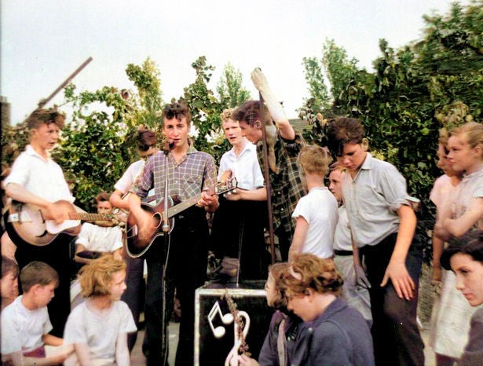
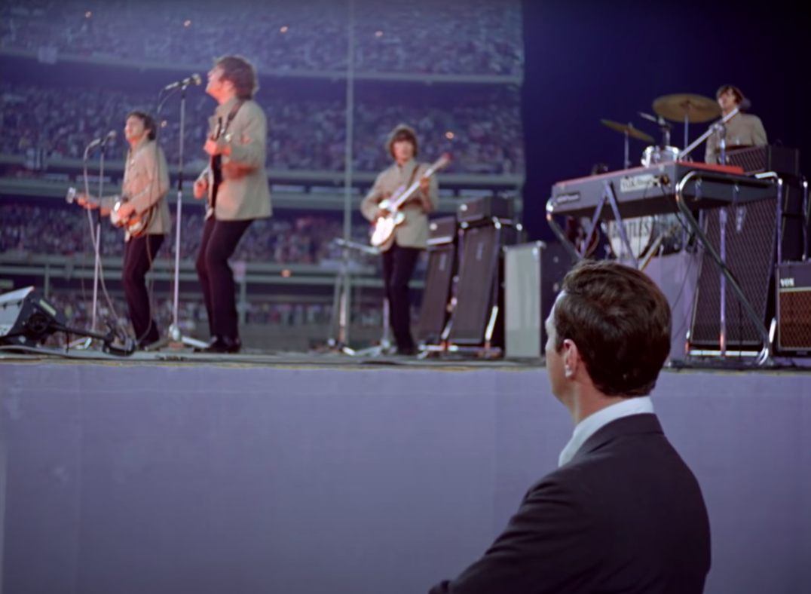
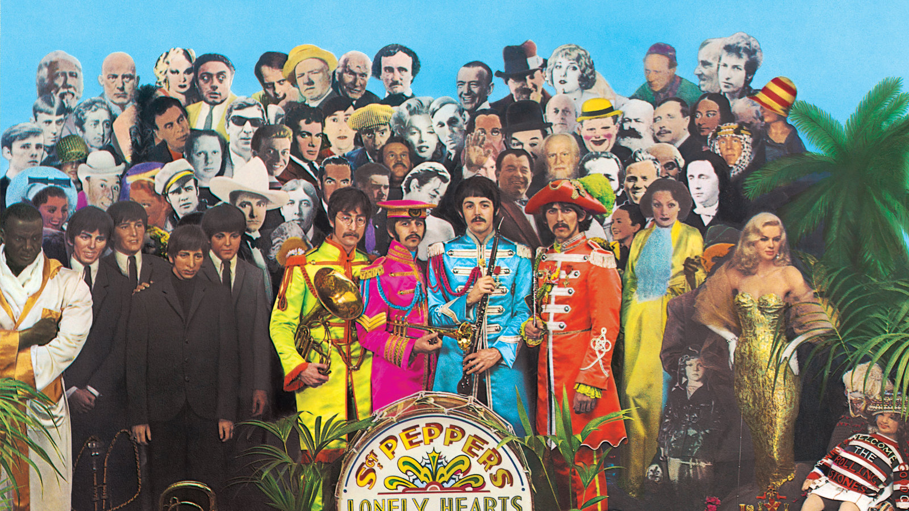
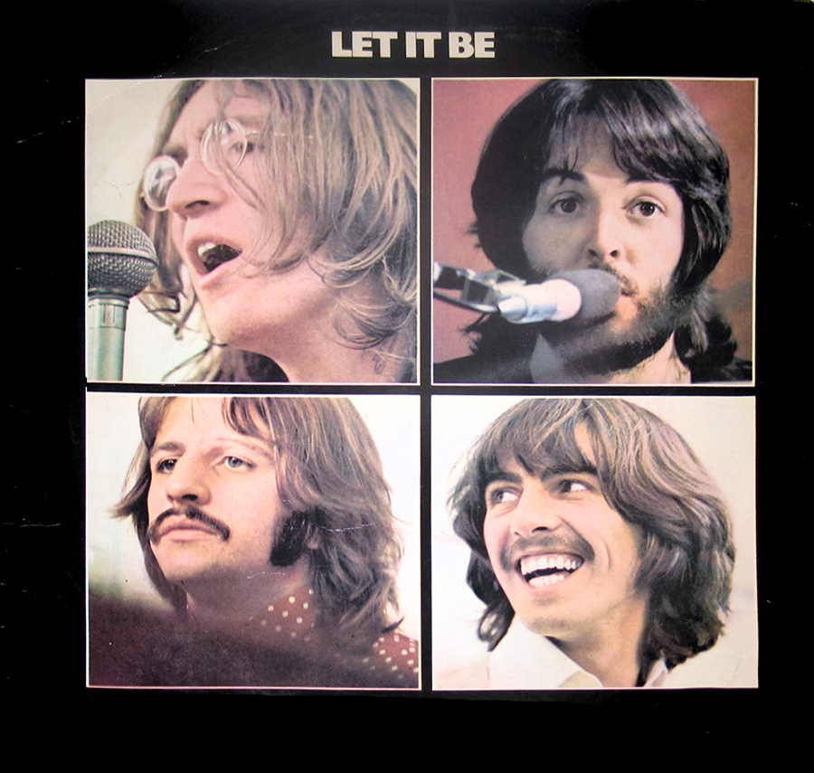

Discussion
1956-1963: Formation
In November 1956, John Lennon, then aged sixteen, formed a skiffle group with several friends from Quarry Bank High School in Liverpool. They briefly called themselves the Blackjacks, before changing their name to the Quarrymen after discovering that another local group were already using the name. Fifteen-year-old Paul McCartney met Lennon in July 1957, and joined as a rhythm guitarist shortly after. In February 1958, McCartney invited his friend George Harrison, then fifteen, to watch the band. Harrison auditioned for Lennon, impressing him with his playing, but Lennon initially thought Harrison was too young. After a month's persistence, during a second meeting (arranged by McCartney), Harrison performed the lead guitar part of the instrumental song "Raunchy" on the upper deck of a Liverpool bus, and they enlisted him as lead guitarist.
Allan Williams, the Beatles' unofficial manager, arranged a
residency for them in Hamburg. They auditioned and hired drummer
Pete Best in mid-August 1960. The band, now a five-piece, departed
Liverpool for Hamburg four days later, contracted to club owner
Bruno Koschmider for what would be a 3½-month residency. Beatles
historian Mark Lewisohn writes:
They pulled into Hamburg at dusk
on 17 August, the time when the red-light area comes to life ...
flashing neon lights screamed out the various entertainment on offer,
while scantily clad women sat unabashed in shop windows waiting for
business opportunities.
Epstein courted the band over the next couple of months, and they
appointed him as their manager in January 1962. Throughout early
and mid-1962, Epstein sought to free the Beatles from their
contractual obligations to Bert Kaempfert Productions. He
eventually negotiated a one-month early release in exchange
for one last recording session in Hamburg. On their return to
Germany in April, a distraught Kirchherr met them at the airport
with news of Sutcliffe's death the previous day from a brain
haemorrhage. Epstein began negotiations with record labels for a
recording contract. To secure a UK record contract, Epstein
negotiated an early end to the band's contract with Polydor, in
exchange for more recordings backing Tony Sheridan. After a New
Year's Day audition, Decca Records rejected the band, saying,
Guitar groups are on the way out, Mr. Epstein.
However,
three months later, producer George Martin signed the Beatles to
EMI's Parlophone label.

1963-1966: Beatlemania and touring years
On 11 February 1963, the Beatles recorded ten songs during a
single studio session for their debut LP, Please Please Me.
It was supplemented by the four tracks already released on
their first two singles. Martin considered recording the LP
live at The Cavern Club, but after deciding that the building's
acoustics were inadequate, he elected to simulate a "live"
album with minimal production in
a single marathon session
at Abbey Road
. After the moderate success of Love Me Do,
the single Please Please Me was released in January 1963,
two months ahead of the album. It reached number one on every
UK chart except Record Retailer, where it peaked at number two.
EMI's American subsidiary, Capitol Records, hindered the Beatles' releases in the United States for more than a year by initially declining to issue their music, including their first three singles. Concurrent negotiations with the independent US label Vee-Jay led to the release of some, but not all, of the songs in 1963. Vee-Jay finished preparation for the album Introducing... The Beatles , comprising most of the songs of Parlophone's Please Please Me, but a management shake-up led to the album not being released. After it emerged that the label did not report royalties on their sales, the licence that Vee-Jay had signed with EMI was voided. A new licence was granted to the Swan label for the single She Loves You. The record received some airplay in the Tidewater area of Virginia from Gene Loving of radio station WGH and was featured on the Rate-a-Record segment of American Bandstand, but it failed to catch on nationally.
A black-and-white image of four men standing in front of a crowd of people at the bottom of an aeroplane staircase The Beatles arriving at John F. Kennedy International Airport, 7 February 1964 Epstein brought a demo copy of I Want to Hold Your Hand to Capitol's Brown Meggs, who signed the band and arranged for a $40,000 US marketing campaign. American chart success began after disc jockey Carroll James of AM radio station WWDC, in Washington, DC, obtained a copy of the British single I Want to Hold Your Hand in mid-December 1963 and began playing it on-air Taped copies of the song soon circulated among other radio stations throughout the US. This caused an increase in demand, leading Capitol to bring forward the release of I Want to Hold Your Hand by three weeks. Issued on 26 December, with the band's previously scheduled debut there just weeks away, I Want to Hold Your Hand sold a million copies, becoming a number-one hit in the US by mid-January. In its wake Vee-Jay released Introducing... The Beatles along with Capitol's debut album, Meet the Beatles!, while Swan reactivated production of She Loves You.

1966-1970: Studio years
Freed from the burden of touring, the Beatles embraced an
increasingly experimental approach as they recorded Sgt.
Pepper's Lonely Hearts Club Band, beginning in late November
1966. According to engineer Geoff Emerick, the album's recording
took over 700 hours. He recalled the band's insistence
that everything on Sgt. Pepper had to be different. We had
microphones right down in the bells of brass instruments and
headphones turned into microphones attached to violins. We
used giant primitive oscillators to vary the speed of instruments
and vocals and we had tapes chopped to pieces and stuck together
upside down and the wrong way around.
Parts of
A Day in the
Life
featured a 40-piece orchestra. The sessions initially
yielded the non-album double A-side single
Strawberry Fields
Forever
/Penny Lane in February 1967; the Sgt. Pepper LP
followed with a rush-release in May. The musical complexity of
the records, created using relatively primitive four-track
recording technology, astounded contemporary artists. Among
music critics, acclaim for the album was virtually universal.
Gould writes:
The overwhelming consensus is that the Beatles had created a popular masterpiece: a rich, sustained, and overflowing work of collaborative genius whose bold ambition and startling originality dramatically enlarged the possibilities and raised the expectations of what the experience of listening to popular music on record could be. On the basis of this perception, Sgt. Pepper became the catalyst for an explosion of mass enthusiasm for album-formatted rock that would revolutionise both the aesthetics and the economics of the record business in ways that far outstripped the earlier pop explosions triggered by the Elvis phenomenon of 1956 and the Beatlemania phenomenon of 1963.
Two Beatles film projects were conceived within weeks of completing Sgt. Pepper: Magical Mystery Tour, a one-hour television film, and Yellow Submarine, an animated feature-length film produced by United Artists. The group began recording music for the former in late April 1967, but the project then lay dormant as they focused on recording songs for the latter. On 25 June, the Beatles performed their forthcoming single All You Need Is Love to an estimated 350 million viewers on Our World, the first live global television link. Released a week later, during the Summer of Love, the song was adopted as a flower power anthem. The Beatles' use of psychedelic drugs was at its height during that summer. In July and August, the group pursued interests related to similar utopian-based ideology, including a week-long investigation into the possibility of starting an island-based commune off the coast of Greece.
In February 1968, the Beatles travelled to Maharishi Mahesh
Yogi's ashram in Rishikesh, India, to take part in a three-month
meditation "Guide Course". Their time in India marked one of the
band's most prolific periods, yielding numerous songs, including
a majority of those on their next album. However, Starr left
after only ten days, unable to stomach the food, and McCartney
eventually grew bored and departed a month later. For Lennon
and Harrison, creativity turned to question when an electronics
technician known as Magic Alex suggested that the Maharishi was
attempting to manipulate them. When he alleged that the Maharishi
had made sexual advances to women attendees, a persuaded Lennon
left abruptly just two months into the course, bringing an
unconvinced Harrison and the remainder of the group's entourage
with him. In anger, Lennon wrote a scathing song titled
Maharishi, renamed Sexy Sadie to avoid
potential legal issues. McCartney said,
We made a mistake. We thought there was more to him than there
was.

1970-present: After the break-up
In December 1980, Lennon was shot and killed outside his New York City apartment. Harrison rewrote the lyrics of his song All Those Years Ago" in Lennon's honour. With Starr on drums and McCartney and his wife, Linda, contributing backing vocals, the song was released as a single in May 1981. McCartney's own tribute, Here Today, appeared on his Tug of War album in April 1982. In 1984 Starr joined McCartney to star in Paul's film Give My Regards to Broad Street, and played with Paul on several of the songs on the soundtrack. In 1987, Harrison's Cloud Nine album included When We Was Fab , a song about the Beatlemania era.
Harrison died from metastatic lung cancer in November 2001. Paul McCartney and Ringo Starr were among the musicians who performed at the Concert for George, organised by Eric Clapton and Harrison's widow, Olivia. The tribute event took place at the Royal Albert Hall on the first anniversary of Harrison's death.
